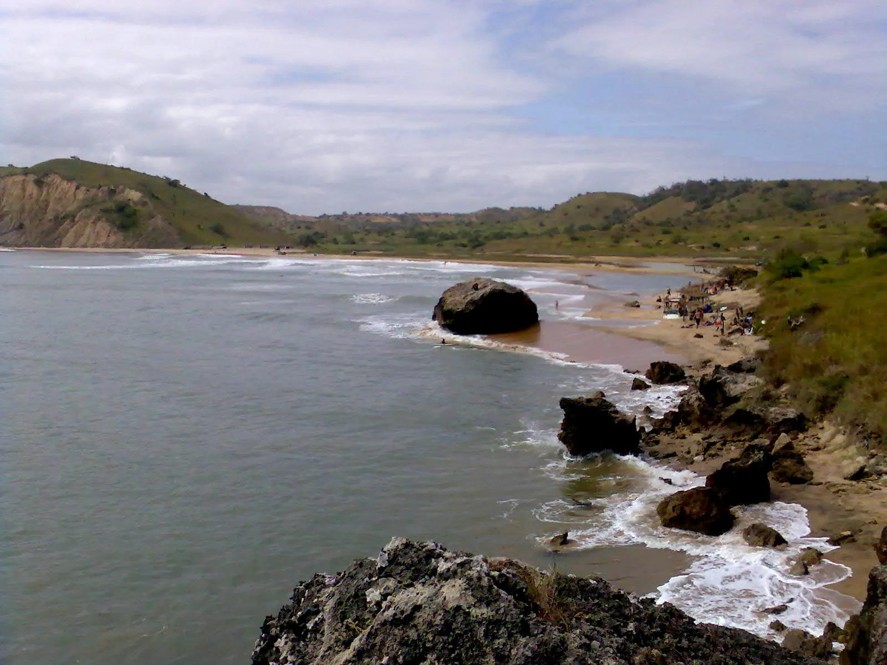

Cabo Ledo
Bengo, Angola · surf

Longue gauche de pointe au sud de Luanda, l’une des vagues les plus longues d’Afrique. Le spot reste confidentiel.
- Lieu
- Bengo, Angola
- Niveau
- Intermédiaire
- Activités
- surf
- Type d'eau
- Mer / océan
- Coordonnées
- -9.67, 13.23 (position approximative du secteur)
Dangers à connaître
- Secours éloignés.
- Courant le long de la pointe.
Le conseil d'Ocean Buddy
Organise ton séjour avec le lodge local : l’accès est isolé.
Ouvrir dans Ocean Buddy Télécharger sur l'App Store
Source : Fiche Ocean Buddy · septembre 2026 · à vérifier localement.